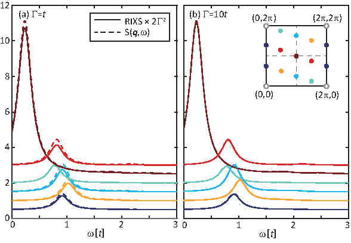
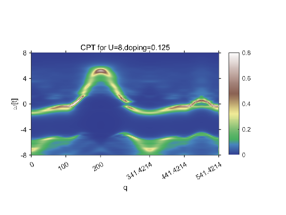
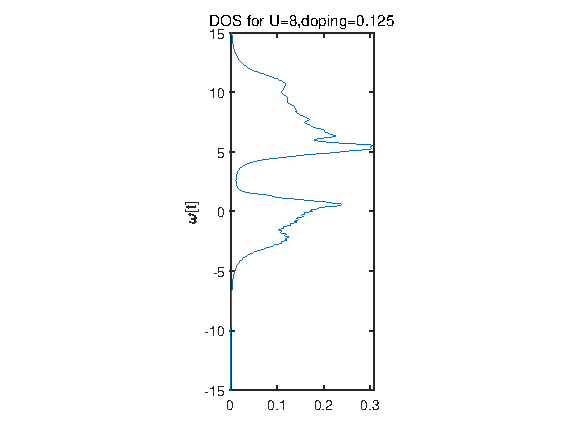
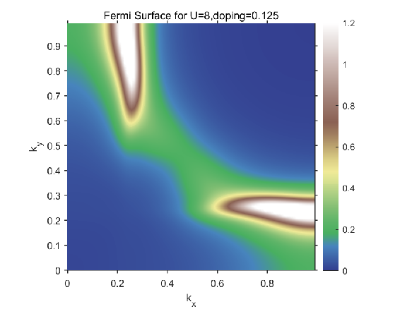
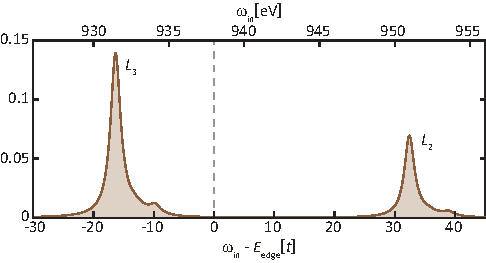

| Doping: 2/16 |
| MomentumDensity: 100 |
| requestedBZRegion: HighSymmLines |
| FermiSurfaceThickness: 0.05 |

FIG. 3 CPT output files.



FIG. 4 CPT result using the parameter shown before.

FIG. 5 Direct (\(L\)-edge) XAS for a half-filled Hubbard model (\(t=400\)eV, \(t^\prime=-0.3t\) and \(U=8t\)) with 12A cluster. The dashed line denotes the edge energy without spin-orbit coupling (938eV). With the presence of spin-orbit coupling \(\lambda=32.5t=13\)eV, the two absorption peaks are denoted as \(L_2\) and \(L_2\). The core-hole attraction is \(U_c=-4t\) and inverse core-hole lifetime is set as \(\Gamma=t\).
FIG. 6 Direct (\(L\)-edge) RIXS for a half-filled Hubbard model (\(t=400\)eV, \(t^\prime=-0.3t\) and \(U=8t\)) with 12A cluster. The incident energy \(\omega_{\rm in}=-16.3t\), corresponding to the \(L_3\) edge. The lifetime is selected as (a) \(\Gamma=t\) and (b) \(\Gamma=10t\), and the RIXS spectra are scaled by a factor of \(2\Gamma^2\). The dynamical spin structure factors \(S(q,\omega)\) are plotted as dashed lines for comparison.
B. Models
The single-band Hubbard model is
\[\begin{aligned}
H = -t\sum_{\langle i,j\rangle} \left[c_{i\sigma}^\dagger c_{j\sigma} +h.c.\right] -t^\prime\sum_{\langle\langle i,j\rangle\rangle} \left[c_{i\sigma}^\dagger c_{j\sigma} +h.c.\right]+U\sum_i n_{i\uparrow} n_{j\downarrow}\end{aligned}\]
Eq. (1)
The electrostatic e-ph coupling is
\[\begin{aligned}
H_{e-\mathrm{ph}} = \sum_{i,j} g_{ij} n_{i} (a_{j}+a_{j}^{\dagger})+\sum_j \omega_j a_j^\dagger a_j= \frac1{\sqrt{N}} \sum_q g_q (a_{q}+a_{-q}^{\dagger }) \rho_q+\sum_q \omega_q a_q^\dagger a_q\,.\end{aligned}\]
Eq. (2)
The second expression assumes translational symmetry \(g_{ij}\equiv g_{i-j} = \sum_{ij} g_{q} e^{-iq\cdot(r_j-r_i)}\).
Here, the \(\omega_q\) describes the phonon dispersion, \(g_q\) parametrizes the e-ph interaction at a wavevector \(q\); \(a_q\) annihilates a phonon at momentum \(q\) and \(\rho_{q}=\sum_{i\sigma} n_{i\sigma}e^{-iq\cdot r_i}\) is the electron density.
In the code, we denote the on-site e-ph coupling as \(g\), and the nearest-neighbor coupling as \(g^\prime\). That said,
\[\begin{aligned}
g_q = g + 2g^\prime \left[\cos q_x + \cos q_y\right] + \cdots\end{aligned}\]
Eq. (3)
C. Spectral Engines
The spectral calculation contains both Lehmann-type spectrum and Kramer-Heisenberg-type resonant cross-sections. The generic expression for the Lehmann spectrum is
\[S(\mathbf{q},\omega) = \frac1{\pi N} \mathrm{Im}\left\langle G \left| \mathcal{O}^\dagger \frac1{\mathcal{H} - E_G - \omega - i\delta}\mathcal{O} \right|G\right\rangle\]
Eq. (4)
For example, the Nqw option triggers the calculation of dynamical
charge structure factor \(N(\mathbf{q},\omega)\), defined as
\[N(\mathbf{q},\omega) = \frac1{\pi N} \mathrm{Im}\langle G | \rho_{-q} \frac1{\mathcal{H} - E_G - \omega - i\delta} \rho_q |G\rangle\]
Eq. (5)
where \(\rho_\mathbf{q} = \sum_{k} c_{k+q,\sigma}^\dagger c_{k\sigma}\).
FIG. 7 Dynamical (a) charge and (b) spin structure factors for a half-filled Hubbard model (t′ = −0.3t and U = 8t) with 16-site cluster. The HWHM linewidth is set as 0.15t.
RIXS option triggers the calculation of RIXS spectrum in the Kramers-Heisenberg form
\[I(\mathbf{q},\omega,w_i) = \frac1{\pi N} \mathrm{Im}\langle \Psi | \frac1{\mathcal{H} - E_G - \omega - i\delta} |\Psi\rangle\]
Eq. (6)
where
\[|\Psi\rangle = \frac1N\sum_k\langle \mathcal{D}_{k+q}^\dagger \frac1{\mathcal{H}^\prime - E_G - w_i - i\Gamma} \mathcal{D}_{k} |G\rangle\]
Eq. (7)
and:math:mathcal{D}_{k} = sum_i e^{-kcdot r_i} mathcal{D}_{i}
D. Nonequilibrium Engine
The non-equilibrium spectrum
\[\begin{aligned}
\label{eq:sqwt}
\mathcal{S}(\omega,t)& =& \frac{\sigma_{\rm pr}}{\sqrt{\pi}} \int_{-\infty}^{+\infty} dt_1 \int_{-\infty}^{+\infty}dt_2 e^{i\omega(t_1-t_2)} g(t_1;t)g(t_2;t)\langle \psi(t_1)| O^\dagger U(t_1,t_2) O|\psi(t_2)\rangle\end{aligned}\]
Eq. (8)
where
\[g(t^\prime;t) = \frac1{\sqrt{2\pi}\sigma_{\rm pr}}e^{-{(t^\prime-t)^2}/{2\sigma_{\rm pr}^2}}\]
Eq. (9)
The normalization factor guarantees the sum rule, that
\[\int_{-\infty}^{+\infty}\mathcal{S}(\omega,t)\,d\omega \equiv \langle G| O^\dagger O|G\rangle\]
Eq. (10)
in absence of the pump.
Therefore, the final trRIXS cross-section reads
\[\begin{split}\begin{aligned}
\label{eq:RIXScrossSec3}
&&\mathcal{I}(q_i,q_o,w_i,w_o;\epsilon_i,\epsilon_o)(t)\!\nonumber\\
&=&\! \iint\!dt_1^\prime dt_2^\prime\! \int_{-\infty}^{t_2^\prime}\!dt_2\!\int_{-\infty}^{t_1^\prime}\!dt_1
e^{iw_i(t_2-t_1)-iw_o(t_2^\prime-t_1^\prime)} g(t_1,t)g(t_2,t) l(t_1,t_1^\prime)l(t_2,t_2^\prime)\times\nonumber\\
&&\big\langle \hat{\mathcal{D}}_{q_i\epsilon_i}^\dagger(t_2)\hat{\mathcal{D}}_{q_o\epsilon_o}(t_2^\prime) \hat{\mathcal{D}}_{q_o\epsilon_o}^\dagger(t_1^\prime) \hat{\mathcal{D}}_{q_i\epsilon_i}(t_1) \big\rangle_0.\end{aligned}\end{split}\]
Eq. (11)